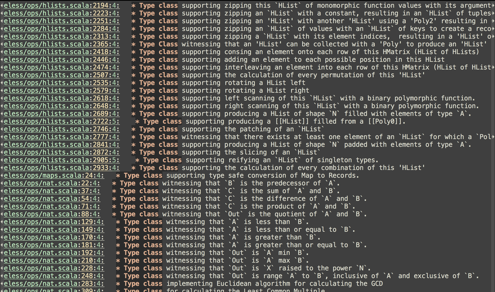
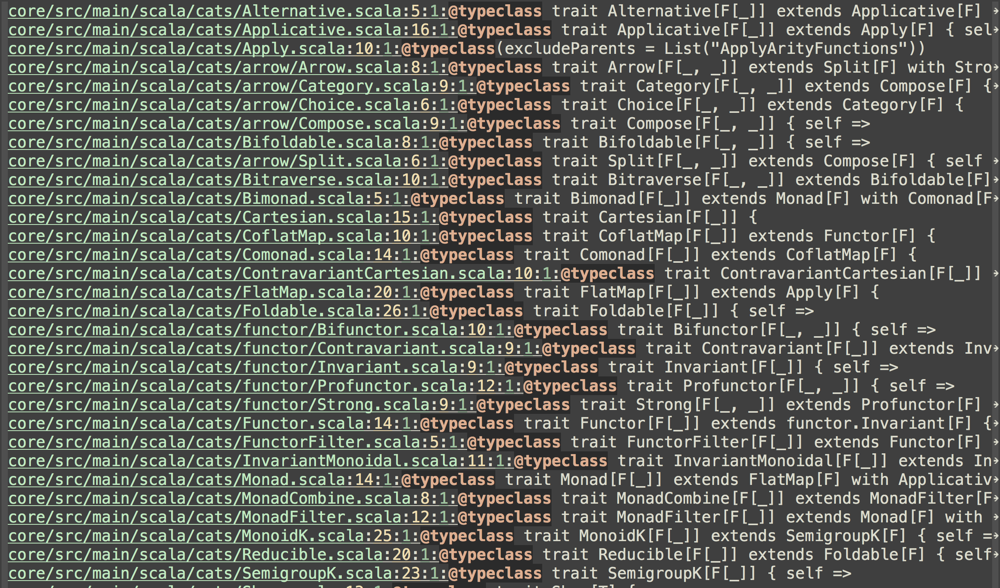

class: center, middle # Roll your own Type class Josef Vlach • `@VlachJosef` • Foldright Consulting Limited --- # What is a Type Class https://en.wikipedia.org/wiki/Type_class In computer science, a .bold[type class] is a _type system_ construct that supports .bold[ad hoc polymorphism]. <span style="color: gray"> This is achieved by adding constraints to type variables in parametrically polymorphic types. Such a constraint typically involves a type class `T` and a type variable `a`, and means that `a` can only be instantiated to a type whose members support _the overloaded_ operations associated with `T`. </span> --- # What is a Type Class #### Definition ```scala trait Show[T] { def apply(obj: T): String } ``` #### Instance ```scala object Show { implicit object StringShow extends Show[String] { def apply(obj: String): String = obj } implicit object BooleanShow extends Show[Boolean] { def apply(obj: Boolean): String = obj.toString } } ```` --- # What is a Type Class #### Usage ```scala object Printer { def print[A](str: A)(implicit show: Show[A]): String = { show.apply(str) } } ``` ```scala Printer.print("ABC") // res0: String = ABC Printer.print(true) // res1: String = true ``` --- # What is a Type Class #### Usage ```scala object Printer { def print[A](str: A)(implicit show: Show[A]): String = { show.apply(str) } } ``` ```scala Printer.print("ABC") // res0: String = ABC Printer.print(true) // res1: String = true ``` ```scala Printer.print(123) // <console>:15: error: could not find implicit value // for parameter show: Show[Int] // Printer.print(123) // ^ ``` --- # Example of Type classes ```scala trait Show[T] { def apply(obj: T): String } ``` --- # Example of Type classes ```scala trait Show[T] { def apply(obj: T): String } ``` ```scala trait Convert[I, O] { def convert(input: I): O } ``` ```scala trait ServiceUrl[T] { def url: String } ``` ```scala trait Flag[T] ``` --- # Example of Type classes ```scala trait YetAnotherTypeclass[A, B, C, D] { def transform(input: A): B def action(str: String): Int def summon(description: String): C def check(param: D): Boolean } ``` ```scala trait WithHigherKind[HK[_], M] ``` And more ... --- # Architecture - For our examples we will assume three layers architecture ``` +--------------+ +--------------+ +--------------+ | | | | | | | Presentation | | Business | | Repository | | |--->| |--->| | | layer | | layer | | layer | | | | | | | +--------------+ +--------------+ +--------------+ ``` --- # Presentation layer - Direct dependency on `UserService` (Business layer) ```scala import classic.services.UserService import model.RegisterRequest import play.api.libs.json.JsObject import scala.concurrent.Future class UsersController(userService: UserService) { def registation(request: RegisterRequest): Future[JsObject] = { userService.register(request) } } ``` ```scala case class RegisterRequest(registrationNumber: String) ``` --- # Business layer - Direct dependency on `UserRepository` (Repository layer) ```scala import classic.repositories.UserRepository import play.api.libs.json.{ JsObject, Json } import scala.concurrent.ExecutionContext.Implicits.global import scala.concurrent.Future class UserService(userRepository: UserRepository) { def register(rr: RegisterRequest): Future[JsObject] = { userRepository.findRegistration(rr.registrationNumber).map { case None => Json.obj("id" -> rr.registrationNumber) case Some(user) => user } } } ``` --- # Repository layer - Backed by DB in production code ```scala class UserRepository { def findRegistration(registrationNumber: String): Future[Option[JsObject]] = { Future.successful(Some(Json.obj("id" -> "123"))) } } ``` --- # Designing FindOne type class - Capture semantics of finding single record in a DB - Looking up record in DB is just a function `A => B` (impure) - Couple of choices how to express this as a type class --- # Designing FindOne type class - Capture semantics of finding single record in a DB - Looking up record in DB is just a function `A => B` (impure) - Couple of choices how to express this as a type class ```scala trait FindOne[T] { def apply(selector: String): Future[Option[T]] } ``` --- # Designing FindOne type class - Capture semantics of finding single record in a DB - Looking up record in DB is just a function `A => B` (impure) - Couple of choices how to express this as a type class ```scala trait FindOne[T] { def apply(selector: String): Future[Option[T]] } ``` ```scala object FindOne { implicit val findOneJsObject = new FindOne[JsObject] { def apply(selector: String): Future[Option[JsObject]] = ??? } } ``` --- # Designing FindOne type class - Capture semantics of finding single record in a DB - Looking up record in DB is just a function `A => B` (impure) - Couple of choices how to express this as a type class ```scala trait FindOne[T] { def apply(selector: String): Future[Option[T]] } ``` ```scala object FindOne { implicit def findOneUser(implicit userRepository: UserRepository) = new FindOne[JsObject] { def apply(selector: String): Future[Option[JsObject]] = userRepository.findRegistration(selector) } } ``` --- # Service layer with Type class - Every operation on a dependent repository turned into a type class - No need for any dependecy so `UserService` can be plain `object` - Easy to test (no need for mocking anymore) ```scala object UserService { def register( rr: RegisterRequest )(implicit FindOneRegistration: FindOne[JsObject] ): Future[JsObject] = { FindOneRegistration(rr.registrationNumber).map { case None => Json.obj("id" -> rr.registrationNumber) case Some(user) => user } } } ``` --- # Calling UserService from controller layer ```scala class UsersController { def registation(request: RegisterRequest) = { UserService.register(request) } } ``` --- # Calling UserService from controller layer ```scala class UsersController { def registation(request: RegisterRequest) = { UserService.register(request) } } ``` ``` <console>:22: error: could not find implicit value for parameter FindOneRegistration: FindOne[play.api.libs.json.JsObject] UserService.register(request) ^ ``` --- # Calling UserService from controller layer ```scala class UsersController(implicit userRepository: UserRepository) { def registation(request: RegisterRequest) = { UserService.register(request) } } ``` --- # Type class design ```scala trait FindOne[T] { def apply(selector: String): Future[Option[T]] } object FindOne { implicit def findOneUser(implicit userRepository: UserRepository) = new FindOne[JsObject] { def apply(selector: String): Future[Option[JsObject]] = userRepository.findRegistration(selector) } } ``` --- # Type class design ```scala trait FindOne[T] { def apply(selector: String): Future[Option[T]] } object FindOne { implicit def findOneUser(implicit userRepository: UserRepository) = new FindOne[JsObject] { def apply(selector: String): Future[Option[JsObject]] = userRepository.findRegistration(selector) } implicit def findOneAccount(implicit accountRepository: AccountRepository) = new FindOne[JsObject] { def apply(selector: String): Future[Option[JsObject]] = accountRepository.findAccount(selector) } } ``` --- # Type class design ```scala class UsersController(implicit userRepository: UserRepository, accountRepository: AccountRepository) { def registation(request: RegisterRequest) = { UserService.register(request) } } ``` --- # Type class design ```scala class UsersController(implicit userRepository: UserRepository, accountRepository: AccountRepository) { def registation(request: RegisterRequest) = { UserService.register(request) } } // <console>:21: error: ambiguous implicit values: // both method findOneUser in object FindOne of type ( // implicit userRepository: UserRepository)FindOne[JsObject] // and method findOneAccount in object FindOne of type ( // implicit accountRepository: AccountRepository)FindOne[JsObject] // match expected type FindOne[JsObject] // UserService.register(request) // ^ ``` --- # Type class design ```scala case class UserData(value: JsObject) extends AnyVal case class AccountData(value: JsObject) extends AnyVal ``` ```scala trait FindOne[T] { def apply(selector: String): Future[Option[T]] } object FindOne { implicit def findOneUser(implicit userRepository: UserRepository) = new FindOne[UserData] { def apply(selector: String): Future[Option[UserData]] = userRepository.findRegistration(selector) } implicit def findOneAccount(implicit accountRepository: AccountRepository) = new FindOne[AccountData] { def apply(selector: String): Future[Option[AccountData]] = accountRepository.findAccount(selector) } } ``` --- # Testing ```scala class UserServiceSpec extends FlatSpec with Matchers with ScalaFutures { "UserService" should "return existing registration" in { implicit val findOneUserData = new FindOne[UserData] { def apply(selector: String) = Future.successful(Some(UserData(Json.obj("abc" -> "789")))) } val res = UserService.register(RegisterRequest("123")) res.futureValue should be(UserData(Json.obj("abc" -> "789"))) } it should "return new registration" in { implicit val findOneUserData = new FindOne[UserData] { def apply(selector: String) = Future.successful(None) } val res = UserService.register(RegisterRequest("123456")) res.futureValue should be(UserData(Json.obj("id" -> "123456"))) } } ``` --- # Testing ```scala object FindOneTC { def apply(userData: Option[UserData]) = new FindOne[UserData] { def apply(selector: String): Future[Option[UserData]] = { Future.successful(userData) } } } class UserServiceSpec extends FlatSpec with Matchers with ScalaFutures { "UserService" should "return existing registration" in { val userData = UserData(Json.obj("abc" -> "789")) implicit val findOneUserData = FindOneTC(Some(userData)) val res = UserService.register(RegisterRequest("123")) res.futureValue.value should be(Json.obj("abc" -> "789")) } } ``` --- # Testing ```scala object FindOneTC { def apply(userData: Option[UserData])(assert: String => Assertion) = new FindOne[UserData] { def apply(selector: String): Future[Option[UserData]] = { assert(selector) Future.successful(userData) } } } class UserServiceSpec extends FlatSpec with Matchers with ScalaFutures { "UserService" should "return existing registration" in { val userData = UserData(Json.obj("abc" -> "789")) implicit val findOneUserData = FindOneTC(Some(userData)){ selector => selector should be("123") } val res = UserService.register(RegisterRequest("123")) res.futureValue.value should be(Json.obj("abc" -> "789")) } } ``` --- # Other candidates Much more candidates for type classes - REST calls - current time - random number generator --- # Shapeless  --- # Cats  --- class: center, middle # Thanks! Slides at `http://www.vlachjosef.com/roll-your-own-typeclass/slides.html` Code at `https://github.com/VlachJosef/roll-your-own-typeclass` Real example at `https://github.com/hmrc/bforms` ## Questions?